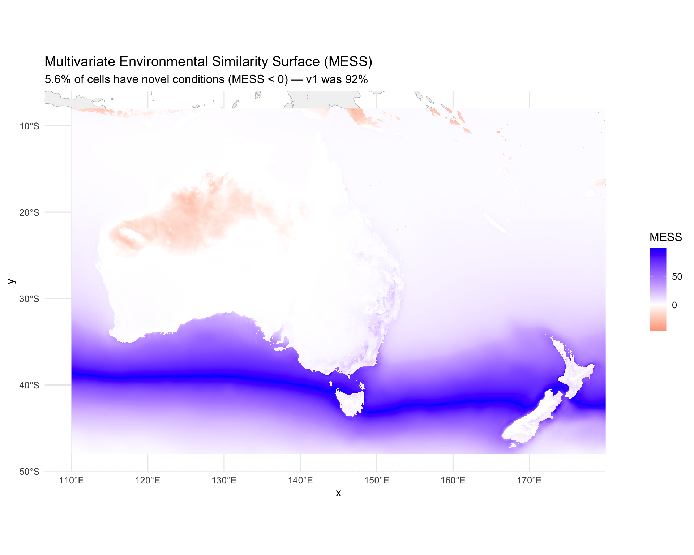
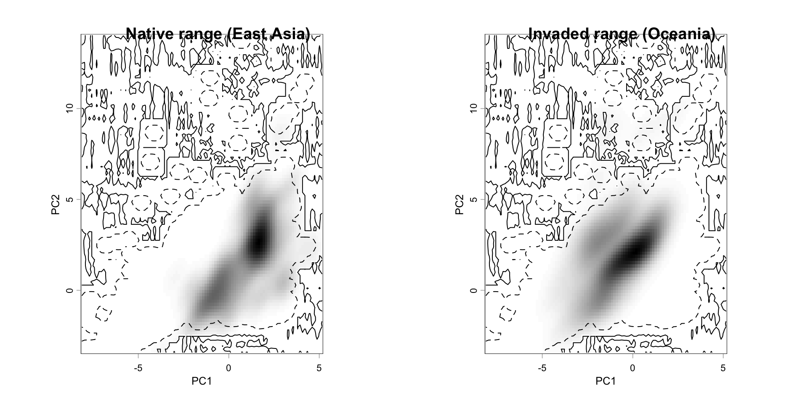

options(java.parameters = "-Xmx12g")
library(tidyverse)
library(terra)
library(sf)
library(predicts)
library(rJava)
library(ecospat)
library(ade4)
library(dismo)
library(rnaturalearth)
library(rnaturalearthdata)Step 6: Model Evaluation
Overview
Comprehensive model evaluation with side-by-side comparison to v1 metrics. This step covers:
- Standard discrimination metrics (AUC, TSS, Kappa)
- MESS analysis for extrapolation risk
- Biological validation against known distribution
- Ecospat niche overlap (Schoener’s D, Warren’s I)
- Principled threshold selection (MaxSS, 10th percentile, equal sens/spec)
- Leave-one-region-out (LORO) cross-validation for transferability
base_dir <- "~/Library/CloudStorage/OneDrive-CSIRO/OneDrive - Docs/01_Projects/Hlongicornis_SDM/"
processed_v2 <- file.path(base_dir, "processed_data_2")
figures_dir <- file.path(base_dir, "figures_2")
outputs_dir <- file.path(base_dir, "outputs_2")1. Load model, data, and environmental rasters
# The selected MaxEnt model from Step 5
selected_model <- readRDS(file.path(processed_v2, "selected_maxent_model.rds"))
# ENMeval results for cross-validation metrics
enmeval_results <- readRDS(file.path(processed_v2, "enmeval_results.rds"))
# Occurrence data with region assignments
occ <- read_csv(file.path(processed_v2, "occurrences_stratified.csv"),
show_col_types = FALSE)
occ_coords <- read_csv(file.path(processed_v2, "occurrence_coords.csv"),
show_col_types = FALSE)
# Background points with climate values
bg_points <- read_csv(file.path(processed_v2, "background_points.csv"),
show_col_types = FALSE)
# Environmental rasters
env_M <- readRDS(file.path(processed_v2, "env_selected_M.rds"))
env_aus_nz <- rast(file.path(processed_v2, "env_selected_aus_nz.tif"))
# Accessible area polygon
accessible_area <- st_read(file.path(processed_v2, "accessible_area_M.gpkg"),
quiet = TRUE)
# Model selection summary
model_summary <- read_csv(file.path(outputs_dir, "model_selection_summary_v2.csv"),
show_col_types = FALSE)
sprintf("Occurrences: %d | Background: %d", nrow(occ), nrow(bg_points))[1] "Occurrences: 390 | Background: 9999"2. Threshold selection
Calculate principled thresholds from the training data rather than using an arbitrary 0.5 cutoff.
# Predict suitability at presence and background locations
selected_vars <- names(env_M)
# Extract environmental values at presence points
pres_env <- extract(env_M, as.matrix(occ_coords[, c("lon", "lat")]))
pres_pred <- predict(selected_model, pres_env, type = "cloglog")
# Extract environmental values at background points
bg_env <- bg_points %>% dplyr::select(all_of(selected_vars))
bg_pred <- predict(selected_model, bg_env, type = "cloglog")
# Combine for threshold analysis
eval_data <- tibble(
suitability = c(pres_pred, bg_pred),
presence = c(rep(1, length(pres_pred)), rep(0, length(bg_pred)))
) %>%
filter(!is.na(suitability))
# Calculate thresholds using predicts/dismo evaluate function
eval_obj <- evaluate(
p = pres_pred[!is.na(pres_pred)],
a = bg_pred[!is.na(bg_pred)]
)
# Maximum Sensitivity + Specificity (MaxSS) — our primary threshold
# This maximises the sum of sensitivity and specificity
spec_sens <- eval_obj@t[which.max(eval_obj@TPR + eval_obj@TNR)]
# 10th percentile training presence threshold
# The suitability value below which 10% of training presences fall
p10_threshold <- quantile(pres_pred, probs = 0.10, na.rm = TRUE)
# Equal sensitivity and specificity threshold
# Where sensitivity = specificity
sens_spec_diff <- abs(eval_obj@TPR - eval_obj@TNR)
equal_sens_spec <- eval_obj@t[which.min(sens_spec_diff)]
# Report all thresholds
thresholds <- tibble(
Method = c(
"Maximum Sensitivity + Specificity (MaxSS) [PRIMARY]",
"10th percentile training presence",
"Equal Sensitivity and Specificity"
),
Threshold = c(spec_sens, p10_threshold, equal_sens_spec)
)
thresholds
# Use MaxSS as the primary threshold throughout
primary_threshold <- spec_sens
sprintf("Primary threshold (MaxSS): %.4f", primary_threshold)# A tibble: 3 × 2
Method Threshold
<chr> <dbl>
1 Maximum Sensitivity + Specificity (MaxSS) [PRIMARY] 0.214
2 10th percentile training presence 0.147
3 Equal Sensitivity and Specificity 0.193
[1] "Primary threshold (MaxSS): 0.2138"3. Discrimination metrics
# AUC
auc_value <- eval_obj@auc
# TSS (True Skill Statistic) at the MaxSS threshold
# TSS = sensitivity + specificity - 1
tss_idx <- which.min(abs(eval_obj@t - primary_threshold))
sensitivity_at_thresh <- eval_obj@TPR[tss_idx]
specificity_at_thresh <- eval_obj@TNR[tss_idx]
tss_value <- sensitivity_at_thresh + specificity_at_thresh - 1
# Kappa at MaxSS threshold
# Calculate confusion matrix components
pred_binary <- ifelse(pres_pred >= primary_threshold, 1, 0)
bg_binary <- ifelse(bg_pred >= primary_threshold, 1, 0)
tp <- sum(pred_binary == 1, na.rm = TRUE)
fn <- sum(pred_binary == 0, na.rm = TRUE)
fp <- sum(bg_binary == 1, na.rm = TRUE)
tn <- sum(bg_binary == 0, na.rm = TRUE)
n_total <- tp + fn + fp + tn
observed_accuracy <- (tp + tn) / n_total
expected_accuracy <- ((tp + fp) * (tp + fn) + (fn + tn) * (fp + tn)) / (n_total^2)
kappa_value <- (observed_accuracy - expected_accuracy) / (1 - expected_accuracy)
# Mean suitability at occurrence points
mean_suit_occ <- mean(pres_pred, na.rm = TRUE)
# Compile metrics
metrics <- tibble(
Metric = c("AUC", "TSS", "Kappa", "Sensitivity (MaxSS)",
"Specificity (MaxSS)", "Mean suitability at occurrences",
"Primary threshold (MaxSS)"),
Value = round(c(auc_value, tss_value, kappa_value,
sensitivity_at_thresh, specificity_at_thresh,
mean_suit_occ, primary_threshold), 4)
)
metrics# A tibble: 7 × 2
Metric Value
<chr> <dbl>
1 AUC 0.914
2 TSS 0.717
3 Kappa 0.293
4 Sensitivity (MaxSS) 0.837
5 Specificity (MaxSS) 0.880
6 Mean suitability at occurrences 0.682
7 Primary threshold (MaxSS) 0.2144. Side-by-side comparison with v1
# v1 metrics (from processed_data/model_performance_summary.csv)
comparison <- tibble(
Metric = c(
"Training AUC",
"Test/Validation AUC",
"Kappa",
"TSS",
"Mean suitability at occurrences",
"Number of coefficients",
"Background sampling",
"Primary threshold"
),
v1 = c(
"0.977", "0.976 (random) / 0.900 (block CV)",
"0.369", "0.620",
"0.498", "152",
"Global random (all land)", "0.500 (arbitrary)"
),
v2 = c(
sprintf("%.4f", as.numeric(model_summary$value[model_summary$parameter == "auc_train"])),
sprintf("%.4f", as.numeric(model_summary$value[model_summary$parameter == "auc_val"])),
sprintf("%.4f", kappa_value),
sprintf("%.4f", tss_value),
sprintf("%.4f", mean_suit_occ),
model_summary$value[model_summary$parameter == "n_coefficients"],
"Within M (1000 km buffer, bias-corrected)",
sprintf("%.4f (MaxSS)", primary_threshold)
)
)
comparison# A tibble: 8 × 3
Metric v1 v2
<chr> <chr> <chr>
1 Training AUC 0.977 0.9144
2 Test/Validation AUC 0.976 (random) / 0.900 (block CV) 0.8359
3 Kappa 0.369 0.2933
4 TSS 0.620 0.7166
5 Mean suitability at occurrences 0.498 0.6820
6 Number of coefficients 152 77
7 Background sampling Global random (all land) Within M (1…
8 Primary threshold 0.500 (arbitrary) 0.2138 (Max…5. MESS analysis (Australia/NZ)
MESS (Multivariate Environmental Similarity Surface) identifies cells in the projection area where one or more environmental variables fall outside the range observed in the training data. These cells represent extrapolation and predictions there are unreliable.
# Training environment: values at presence + background points within M
training_env <- bind_rows(
extract(env_M, as.matrix(occ_coords[, c("lon", "lat")])) %>%
as_tibble() %>%
dplyr::select(all_of(selected_vars)),
bg_points %>% dplyr::select(all_of(selected_vars))
) %>%
drop_na()
# Compute MESS for Australia/NZ
mess_aus_nz <- dismo::mess(raster::stack(env_aus_nz), as.data.frame(training_env), full = FALSE) %>% rast()
names(mess_aus_nz) <- "mess"
# Calculate percentage of cells with novel conditions (MESS < 0)
n_valid <- global(!is.na(mess_aus_nz), sum)[[1]]
n_novel <- global(mess_aus_nz < 0, sum, na.rm = TRUE)[[1]]
pct_novel <- round(100 * n_novel / n_valid, 1)
sprintf("MESS analysis — Australia/NZ:")
sprintf(" Valid cells: %.0f", n_valid)
sprintf(" Novel cells: %.0f (MESS < 0)", n_novel)
sprintf(" Extrapolation: %.1f%%", pct_novel)
sprintf(" v1 extrapolation: 92.0%% (expected to be much lower now)")[1] "MESS analysis — Australia/NZ:"
[1] " Valid cells: 1612800"
[1] " Novel cells: 90417 (MESS < 0)"
[1] " Extrapolation: 5.6%"
[1] " v1 extrapolation: 92.0% (expected to be much lower now)"# Convert to data frame for plotting
mess_df <- as.data.frame(mess_aus_nz, xy = TRUE) %>%
filter(!is.na(mess))
world_map <- ne_countries(scale = "medium", returnclass = "sf")
ggplot() +
geom_sf(data = world_map, fill = "grey95", colour = "grey70", linewidth = 0.2) +
geom_raster(data = mess_df, aes(x = x, y = y, fill = mess)) +
scale_fill_gradient2(
low = "red", mid = "white", high = "blue",
midpoint = 0, name = "MESS",
limits = c(min(mess_df$mess), max(mess_df$mess))
) +
coord_sf(xlim = c(110, 180), ylim = c(-48, -8)) +
labs(
title = "Multivariate Environmental Similarity Surface (MESS)",
subtitle = sprintf("%.1f%% of cells have novel conditions (MESS < 0) — v1 was 92%%",
pct_novel)
) +
theme_minimal(base_size = 12)
ggsave(file.path(figures_dir, "06_mess_aus_nz.png"),
width = 10, height = 8, dpi = 300)
6. Biological validation
Test whether the model correctly predicts suitability in areas where H. longicornis is known to occur (or not occur) in Australia.
# Predict suitability across Australia/NZ
pred_aus_nz <- predict(env_aus_nz, selected_model, type = "cloglog")
names(pred_aus_nz) <- "suitability"
# 6a. Eastern coast validation (Sydney–Brisbane corridor)
# This is the core area where H. longicornis is established in Australia
# Approximate bounding box: 150-154°E, 27-34°S
east_coast_ext <- ext(150, 154, -34, -27)
pred_east_coast <- crop(pred_aus_nz, east_coast_ext)
mean_suit_east <- global(pred_east_coast, mean, na.rm = TRUE)[[1]]
# 6b. Known absence areas (central Australia, western deserts)
# Approximate bounding box: 125-140°E, 20-30°S
desert_ext <- ext(125, 140, -30, -20)
pred_desert <- crop(pred_aus_nz, desert_ext)
mean_suit_desert <- global(pred_desert, mean, na.rm = TRUE)[[1]]
# 6c. Report results with pass/fail
validation_results <- tibble(
Check = c(
"Eastern coast (Sydney–Brisbane): mean suitability > 0.3",
"Central deserts: mean suitability < 0.2"
),
Value = c(
sprintf("%.4f", mean_suit_east),
sprintf("%.4f", mean_suit_desert)
),
Status = c(
ifelse(mean_suit_east > 0.3, "PASS", "FAIL"),
ifelse(mean_suit_desert < 0.2, "PASS", "FAIL")
),
v1_Value = c("0.157 (FAILED)", "N/A")
)
validation_results
# Flag prominently if eastern coast check fails
if (mean_suit_east <= 0.3) {
message("============================================================")
message("WARNING: EASTERN COAST BIOLOGICAL VALIDATION FAILED")
message(sprintf("Mean suitability = %.4f (threshold = 0.3)", mean_suit_east))
message("The model is not predicting suitable habitat where H. longicornis")
message("is known to occur in Australia. Investigate variable selection,")
message("background sampling, and model complexity.")
message("============================================================")
}# A tibble: 2 × 4
Check Value Status v1_Value
<chr> <chr> <chr> <chr>
1 Eastern coast (Sydney–Brisbane): mean suitability > 0.3 0.3952 PASS 0.157 (…
2 Central deserts: mean suitability < 0.2 0.0289 PASS N/A 7. Leave-One-Region-Out (LORO) cross-validation
Test model transferability by training on all regions except one, then predicting the held-out region.
# Occurrence data with region assignments
occ_with_region <- occ
# Get unique regions
regions <- unique(occ_with_region$region)
sprintf("Regions for LORO CV: %s", paste(regions, collapse = ", "))
# Run LORO for each region
loro_results <- list()
for (held_out in regions) {
# Split: train on all other regions, test on held-out
train_idx <- occ_with_region$region != held_out
test_idx <- occ_with_region$region == held_out
train_coords <- occ_with_region[train_idx, c("lon", "lat")]
test_coords <- occ_with_region[test_idx, c("lon", "lat")]
# Extract env values
train_env <- extract(env_M, as.matrix(train_coords))
test_env <- extract(env_M, as.matrix(test_coords))
# Fit a MaxEnt model with the same settings on the training subset
# Use the same feature class and regularization as the selected model
fc_selected <- model_summary$value[model_summary$parameter == "feature_class"]
rm_selected <- as.numeric(model_summary$value[model_summary$parameter == "regularization"])
# Build args string for MaxEnt
fc_args <- paste0(
c("nolinear", "noquadratic", "nohinge", "noproduct", "nothreshold"),
collapse = ","
)
# Enable the selected features
fc_chars <- strsplit(tolower(fc_selected), "")[[1]]
fc_enable <- character(0)
if ("l" %in% fc_chars) fc_enable <- c(fc_enable, "linear=true")
if ("q" %in% fc_chars) fc_enable <- c(fc_enable, "quadratic=true")
if ("h" %in% fc_chars) fc_enable <- c(fc_enable, "hinge=true")
if ("p" %in% fc_chars) fc_enable <- c(fc_enable, "product=true")
if ("t" %in% fc_chars) fc_enable <- c(fc_enable, "threshold=true")
tryCatch({
loro_model <- MaxEnt(
x = env_M,
p = as.matrix(train_coords),
a = as.matrix(bg_points[, c("lon", "lat")]),
args = c(
paste0("betamultiplier=", rm_selected),
"outputformat=cloglog"
)
)
# Predict at test (held-out) locations
test_pred <- predict(loro_model, test_env, type = "cloglog")
# Predict at background for AUC calculation
bg_pred_loro <- predict(loro_model, bg_env, type = "cloglog")
# Calculate AUC for the held-out region
eval_loro <- evaluate(
p = test_pred[!is.na(test_pred)],
a = bg_pred_loro[!is.na(bg_pred_loro)]
)
loro_results[[held_out]] <- tibble(
region = held_out,
n_train = sum(train_idx),
n_test = sum(test_idx),
auc = eval_loro@auc,
mean_suitability = mean(test_pred, na.rm = TRUE)
)
}, error = function(e) {
message(sprintf("LORO failed for region %s: %s", held_out, e$message))
loro_results[[held_out]] <- tibble(
region = held_out,
n_train = sum(train_idx),
n_test = sum(test_idx),
auc = NA_real_,
mean_suitability = NA_real_
)
})
}
loro_table <- bind_rows(loro_results)
loro_table[1] "Regions for LORO CV: East_Asia, North_America, Oceania, Other"
# A tibble: 4 × 5
region n_train n_test auc mean_suitability
<chr> <int> <int> <dbl> <dbl>
1 East_Asia 176 214 0.408 0.0749
2 North_America 336 54 0.474 0.0468
3 Oceania 269 121 0.132 0.0228
4 Other 389 1 0.983 0.871 8. Ecospat niche overlap analysis
Compare the environmental niche between native (East Asia) and invaded (Oceania) ranges using Schoener’s D and Warren’s I.
# Separate occurrence records by native vs. invaded range
native_occ <- occ_with_region %>%
filter(region == "East_Asia") %>%
dplyr::select(lon, lat)
invaded_occ <- occ_with_region %>%
filter(region == "Oceania") %>%
dplyr::select(lon, lat)
# We need background climate data for both ranges
# Extract climate at all background points for the PCA
bg_climate <- bg_points %>% dplyr::select(all_of(selected_vars))
# Extract climate at native and invaded occurrences
# Use both env_M (training region) and env_aus_nz (projection region) to cover all points
native_climate <- extract(env_M, as.matrix(native_occ)) %>%
dplyr::select(all_of(selected_vars)) %>%
drop_na()
invaded_climate <- extract(env_aus_nz, as.matrix(invaded_occ)) %>%
dplyr::select(all_of(selected_vars)) %>%
drop_na()
# Run PCA on the combined background + invaded climate so PCA space covers both ranges
all_climate <- bind_rows(bg_climate, invaded_climate) %>% drop_na()
pca_env <- dudi.pca(all_climate, scannf = FALSE, nf = 2)
# Score the native and invaded occurrences on the PCA axes
native_scores <- suprow(pca_env, native_climate)$li %>% drop_na()
invaded_scores <- suprow(pca_env, invaded_climate)$li %>% drop_na()
bg_scores <- suprow(pca_env, bg_climate)$li %>% drop_na()
# Create ecospat grids for each range
# Grid resolution for kernel density
# Extend extent slightly so edge points fall within the density raster
grid_res <- 100
ext_margin <- c(0.5, 0.5, 0.5, 0.5)
# Combine all scores to define the full environmental space
all_scores <- bind_rows(bg_scores, native_scores, invaded_scores)
native_grid <- ecospat.grid.clim.dyn(
glob = all_scores,
glob1 = bg_scores,
sp = native_scores,
R = grid_res,
th.sp = NULL,
th.env = NULL,
extend.extent = ext_margin,
kernel.method = "ks"
)
invaded_grid <- ecospat.grid.clim.dyn(
glob = all_scores,
glob1 = bg_scores,
sp = invaded_scores,
R = grid_res,
th.sp = NULL,
th.env = NULL,
extend.extent = ext_margin,
kernel.method = "ks"
)
# Calculate niche overlap metrics
overlap <- ecospat.niche.overlap(native_grid, invaded_grid, cor = TRUE)
sprintf("Niche overlap — Native (East Asia) vs Invaded (Oceania):")
sprintf(" Schoener's D: %.4f", overlap$D)
sprintf(" Warren's I: %.4f", overlap$I)[1] "Niche overlap — Native (East Asia) vs Invaded (Oceania):"
[1] " Schoener's D: 0.1664"
[1] " Warren's I: 0.2783"par(mfrow = c(1, 2))
# Plot native niche
ecospat.plot.niche(native_grid, title = "Native range (East Asia)",
name.axis1 = "PC1", name.axis2 = "PC2")
# Plot invaded niche
ecospat.plot.niche(invaded_grid, title = "Invaded range (Oceania)",
name.axis1 = "PC1", name.axis2 = "PC2")
par(mfrow = c(1, 1))
# Save as combined figure
png(file.path(figures_dir, "06_niche_overlap.png"),
width = 10, height = 5, units = "in", res = 300)
par(mfrow = c(1, 2))
ecospat.plot.niche(native_grid, title = "Native range (East Asia)",
name.axis1 = "PC1", name.axis2 = "PC2")
ecospat.plot.niche(invaded_grid, title = "Invaded range (Oceania)",
name.axis1 = "PC1", name.axis2 = "PC2")
dev.off()quartz_off_screen
2 
9. Save evaluation outputs
# Save all metrics
write_csv(metrics, file.path(outputs_dir, "model_metrics_v2.csv"))
write_csv(comparison, file.path(outputs_dir, "v1_v2_comparison.csv"))
write_csv(thresholds, file.path(outputs_dir, "threshold_values_v2.csv"))
write_csv(validation_results, file.path(outputs_dir, "biological_validation_v2.csv"))
write_csv(loro_table, file.path(outputs_dir, "loro_cv_results_v2.csv"))
# Save niche overlap results
niche_overlap_results <- tibble(
Metric = c("Schoener's D", "Warren's I"),
Value = c(overlap$D, overlap$I)
)
write_csv(niche_overlap_results, file.path(outputs_dir, "niche_overlap_v2.csv"))
# Save MESS raster
writeRaster(mess_aus_nz, file.path(processed_v2, "mess_aus_nz.tif"),
overwrite = TRUE)
# Save the current prediction raster (used in Step 7 and beyond)
writeRaster(pred_aus_nz, file.path(processed_v2, "prediction_current_aus_nz.tif"),
overwrite = TRUE)
# Save the primary threshold for use in later steps
writeLines(as.character(primary_threshold),
file.path(processed_v2, "primary_threshold.txt"))
sprintf("Evaluation outputs saved to %s", outputs_dir)[1] "Evaluation outputs saved to ~/Library/CloudStorage/OneDrive-CSIRO/OneDrive - Docs/01_Projects/Hlongicornis_SDM//outputs_2"Summary
# Full evaluation summary
tibble(
Category = c(
rep("Discrimination", 3),
rep("Thresholds", 3),
rep("Extrapolation", 2),
rep("Biological validation", 2),
rep("Niche overlap", 2),
rep("LORO CV", length(regions))
),
Metric = c(
"AUC", "TSS", "Kappa",
"MaxSS", "10th percentile", "Equal sens/spec",
"% novel cells (Aus/NZ)", "v1 novel cells",
"East coast mean suitability", "Desert mean suitability",
"Schoener's D", "Warren's I",
paste0("LORO AUC (", loro_table$region, ")")
),
Value = c(
round(auc_value, 4), round(tss_value, 4), round(kappa_value, 4),
round(spec_sens, 4), round(p10_threshold, 4), round(equal_sens_spec, 4),
pct_novel, 92.0,
round(mean_suit_east, 4), round(mean_suit_desert, 4),
round(overlap$D, 4), round(overlap$I, 4),
round(loro_table$auc, 4)
)
)# A tibble: 16 × 3
Category Metric Value
<chr> <chr> <dbl>
1 Discrimination AUC 0.914
2 Discrimination TSS 0.717
3 Discrimination Kappa 0.293
4 Thresholds MaxSS 0.214
5 Thresholds 10th percentile 0.147
6 Thresholds Equal sens/spec 0.193
7 Extrapolation % novel cells (Aus/NZ) 5.6
8 Extrapolation v1 novel cells 92
9 Biological validation East coast mean suitability 0.395
10 Biological validation Desert mean suitability 0.0289
11 Niche overlap Schoener's D 0.166
12 Niche overlap Warren's I 0.278
13 LORO CV LORO AUC (East_Asia) 0.408
14 LORO CV LORO AUC (North_America) 0.474
15 LORO CV LORO AUC (Oceania) 0.132
16 LORO CV LORO AUC (Other) 0.983 Session Information
sessionInfo()R version 4.4.1 (2024-06-14)
Platform: aarch64-apple-darwin20
Running under: macOS 26.2
Matrix products: default
BLAS: /Library/Frameworks/R.framework/Versions/4.4-arm64/Resources/lib/libRblas.0.dylib
LAPACK: /Library/Frameworks/R.framework/Versions/4.4-arm64/Resources/lib/libRlapack.dylib; LAPACK version 3.12.0
locale:
[1] C.UTF-8/C.UTF-8/C.UTF-8/C/C.UTF-8/C.UTF-8
time zone: Australia/Brisbane
tzcode source: internal
attached base packages:
[1] stats graphics grDevices utils datasets methods base
other attached packages:
[1] ENMeval_2.0.5.2 rnaturalearthdata_1.0.0 rnaturalearth_1.1.0
[4] dismo_1.3-16 raster_3.6-32 sp_2.2-0
[7] ade4_1.7-23 ecospat_4.1.3 rJava_1.0-11
[10] predicts_0.1-19 sf_1.0-21 terra_1.8-93
[13] lubridate_1.9.4 forcats_1.0.0 stringr_1.5.1
[16] dplyr_1.1.4 purrr_1.1.0 readr_2.1.5
[19] tidyr_1.3.1 tibble_3.3.0 ggplot2_4.0.0
[22] tidyverse_2.0.0
loaded via a namespace (and not attached):
[1] tidyselect_1.2.1 farver_2.1.2 S7_0.2.0 fastmap_1.2.0
[5] pracma_2.4.6 digest_0.6.37 timechange_0.3.0 lifecycle_1.0.4
[9] magrittr_2.0.3 compiler_4.4.1 rlang_1.1.6 tools_4.4.1
[13] utf8_1.2.6 yaml_2.3.10 knitr_1.50 labeling_0.4.3
[17] htmlwidgets_1.6.4 bit_4.6.0 mclust_6.1.2 classInt_0.4-11
[21] RColorBrewer_1.1-3 KernSmooth_2.23-26 withr_3.0.2 grid_4.4.1
[25] e1071_1.7-16 scales_1.4.0 iterators_1.0.14 MASS_7.3-65
[29] cli_3.6.5 mvtnorm_1.3-3 rmarkdown_2.29 crayon_1.5.3
[33] ragg_1.5.0 generics_0.1.4 tzdb_0.5.0 DBI_1.2.3
[37] proxy_0.4-27 parallel_4.4.1 vctrs_0.6.5 Matrix_1.7-4
[41] jsonlite_2.0.0 hms_1.1.3 bit64_4.6.0-1 archive_1.1.12.1
[45] systemfonts_1.2.3 foreach_1.5.2 units_0.8-7 glue_1.8.0
[49] codetools_0.2-20 stringi_1.8.7 gtable_0.3.6 pillar_1.11.0
[53] htmltools_0.5.8.1 R6_2.6.1 textshaping_1.0.3 ks_1.15.1
[57] vroom_1.6.5 evaluate_1.0.5 lattice_0.22-7 class_7.3-23
[61] Rcpp_1.1.0 xfun_0.53 pkgconfig_2.0.3